I build AI models for semiconductor devices at Alsemy, and I ship them.
Four years of neural operators, physics-informed training, and making models
run in customer-controlled environments.
Physics-based losses keep the answer on a physically plausible curve, not just through the target points.
Pretrained on large simulation datasets, fine-tuned on measured silicon to <5% error.
Live demo runs a compact physics model (EKV-style) in your browser to illustrate
the problem. The production system replaces this with a pretrained neural operator fine-tuned
on measured silicon; proprietary models and data are not included here.
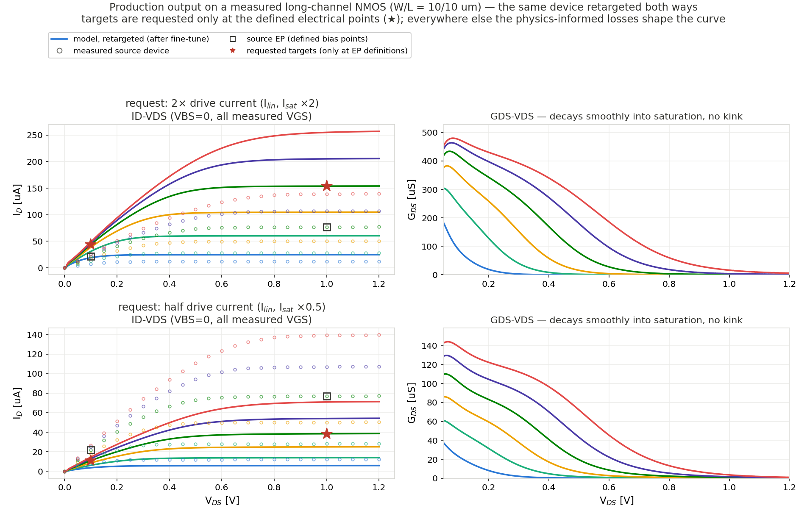
Actual production output — from an internal validation run (device identity and
process anonymized). One measured long-channel NMOS retargeted both ways: 2× the drive current (top)
and half (bottom). The targets (★) exist only at the defined electrical points — Ilin
at low VDS, Isat at high VDS; everywhere else the curve is shaped by
the physics-informed losses, so the full VGS family scales coherently and gds stays smooth
and monotone with no kink.
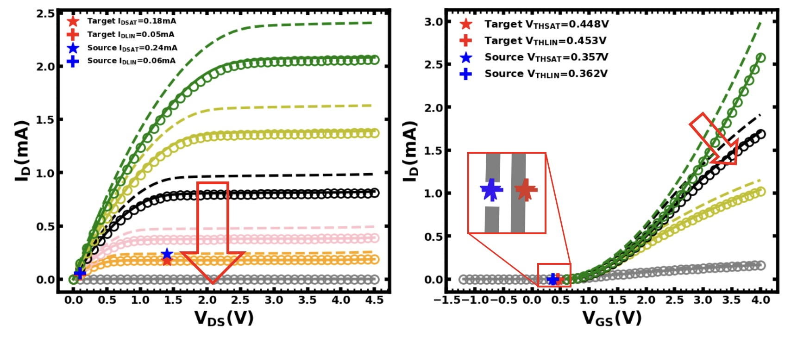
From an internal demo — the fine-tuned model moves a source device (dashed)
onto new electrical targets across the output curve (left, lower drive current) and the transfer
curve (right, shifted threshold). Circles: model output; blue/red markers: source/target
electrical parameters.
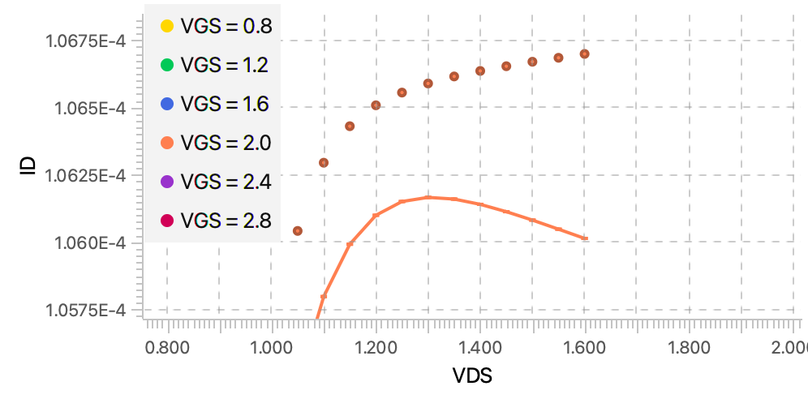
Why physics losses matter — zoom on one output-curve bias after retargeting:
fitting the target points alone lets the curve bend downward in saturation — negative differential
resistance no real device shows. Dots: source data; line: retargeted model.
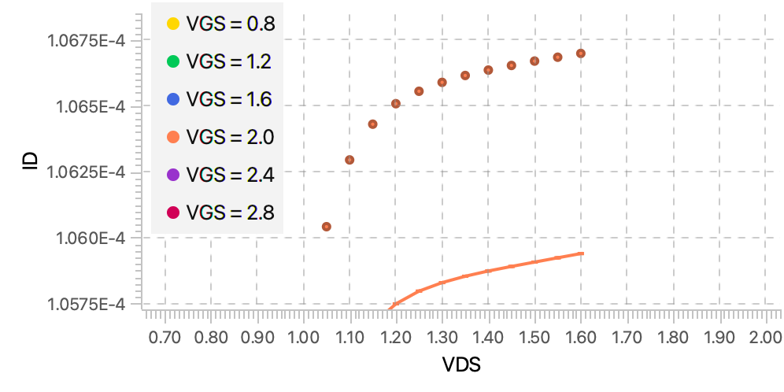
Same bias with a physics constraint on the saturation slope: the NDR is gone and
the curve stays monotone while still meeting the targets. From an internal feature demo.
What made it hard.
Real measurement sweeps disagree with simulation training data — partly from device degradation
(HCI/BTI) during measurement. Diagnosing and closing that gap was most of the work.
Customer environments are CPU-only and on-premise; the whole flow was optimized to
train without a GPU, replacing what used to be a manual, engineer-in-the-loop process.
Capacitance Foundation Model
Sparse-to-dense C–V reconstruction · shipped with CPU-optimized training
The problem. Capacitance defines how a transistor behaves in a circuit, but getting it is slow.
Measuring a full C–V surface takes real tester time; TCAD is accurate but takes hours to days.
The model targets Cgg and Cgb — the two dominant components;
the rest are small enough to sit in the noise.
Small doesn't mean ignorable: BSIM-class models handle effects this small poorly, and they matter
more at every node — the same gap the
leakage modeling work
tackles on the current side.
My approach. Reconstruct the whole characteristic from a handful of points.
A pretrained neural operator with physics consistency built into the architecture —
it cannot produce a thermodynamically inconsistent C–V pair.
The set of input voltage axes is declarative configuration, not runtime branching —
the encoder's embedding layer is sized to the declared input columns, so a one-axis and a
two-axis model are distinct instantiations rather than one model masking a channel.
Trains on CPU-only servers; meta-learned warm starts reach the from-scratch loss floor
up to ~6× faster (device-dependent) and markedly improve interpolation when data is sparse —
measured properly in the "Meta-Learned Warm Starts" project below.
Illustration: sparse points are sampled from a synthetic device and reconstructed
with a physics-basis fit running in your browser. In the shipped system this is a pretrained neural operator;
try 3–4 points to see where naive recovery starts to break — that regime is exactly why
pretraining on large device families matters.
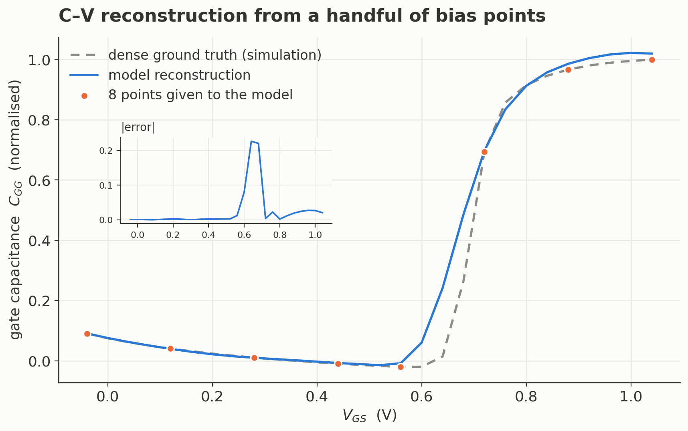
Actual model output — reconstruction from 8 bias points on a technology the
initialization never saw (inset: absolute error, concentrated at the transition — exactly where
sparse recovery is hardest). Synthetic data (reproducible from public compact models).
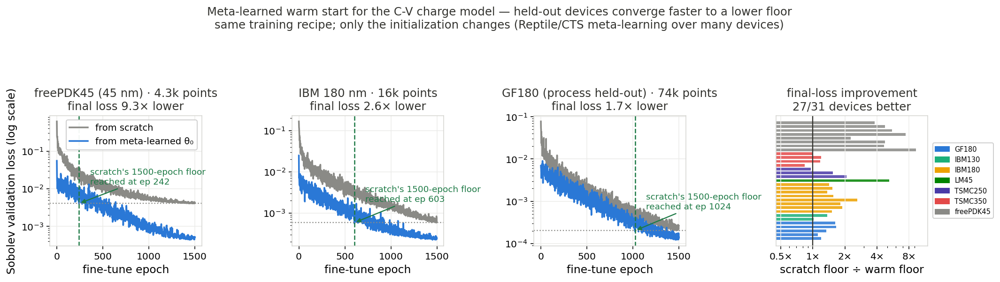
Why meta-learning — held-out devices fine-tune from the meta-learned θ₀
to a lower floor, faster. Full evaluation in the "Meta-Learned Warm Starts" project.
Leakage Current Modeling
May–Aug 2026 · shipped in a memory maker's release
The problem. Leakage currents used to be rounding errors. Not anymore.
As devices shrink, leakage components that BSIM-class models never captured well
become a visible part of the device's behavior. The large, well-behaved terms have their own model
(the C–V work);
this project covers the leakage currents that BSIM-class fits miss.
Each physical leakage path behaves differently — one lumped correction can't follow them all.
My approach. Respect the physics: model the parts, then recombine.
Each physical leakage component is modeled separately, at a scale where its behavior is learnable.
Components are recombined under current conservation into the quantities a tester can actually measure.
Shipped in the memory maker's release — extending the product's coverage into bias regions where leakage dominates.
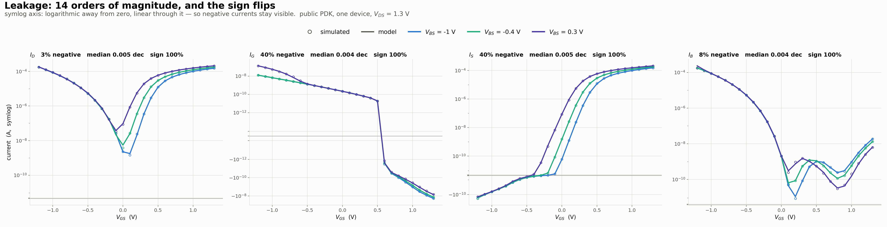
Getting the sign right on a log scale — four terminal currents spanning
14 decades, two of them changing sign across the bias grid, plotted on a symlog axis with signs
preserved. A model that is right in magnitude but wrong in sign lands on the wrong side of zero
and shows immediately; here the reconstruction stays on the correct side throughout — median error
about 0.005 decades, sign agreement above 99.9% (lines: model, circles: simulated; synthetic
public-PDK data).
On-Site Model Adaptation
LoRA fine-tuning where the data lives · secure offline delivery
The problem. Fab measurement data is among the most guarded IP in the industry.
It cannot leave the customer's site — often not even the measurement room's network.
So how does a shipped model keep learning each customer's process physics?
My approach. Move the training to the data.
A self-contained pipeline runs inside the customer's offline environment.
Fine-tunes the deployed model with LoRA — small, cheap, reversible updates.
Regression tests guard every customer data convention, because no debugger can follow the code on-site.
1 · Parsemeasurement sweeps, units & polarity auto-detected
2 · Recomputeelectrical parameters from raw curves
3 · Adapt, then fine-tuneLoRA recon adapt → fine-tune, all on-site — data never moves
4 · Exportupdated model, same deployment format
The result: a static shipped model becomes an adaptable one, and each customer's
process physics feeds back into their own model — with zero data leaving their premises.
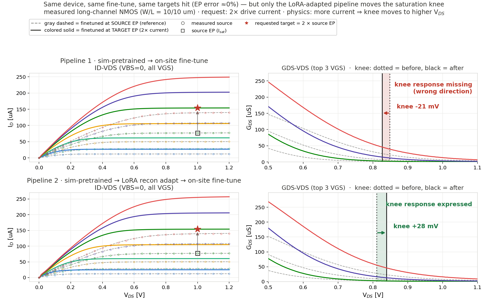
What the LoRA step buys — physics, not just fit. From an internal validation
run (device identity and process anonymized). One measured long-channel
device, one request (2× drive current), the exact same production fine-tune in both rows — and both
rows hit the electrical targets to ≈0% error. The difference is where the saturation knee goes.
Straight from simulation pretraining (top), the fine-tune satisfies the numbers by re-scaling the
curve: the knee fails to respond in the physical direction — here it even slips 21 mV the wrong way. Insert a short LoRA
reconstruction adaptation before fine-tuning (bottom, 1.3% of parameters, conditioning path frozen)
and the same fine-tune now moves the knee +28 mV to higher VDS — the direction real
silicon behaves when it carries more current.
What this taught us: the customer-specific residual and the physics live in different parts
of the network. If the model wastes its fine-tune budget on closing the sim-to-silicon gap, the
physics gets overwritten; close that gap first with a cheap LoRA reconstruction step, and the
fine-tune is free to express it. That is why the on-site pipeline adapts with LoRA before
fine-tuning instead of fine-tuning harder.
Meta-Learned Warm Starts for the C–V Model
Reptile / CTS meta-learning · evaluated on 31 held-out devices across 7 process nodes
The problem. Every new device means training the charge/capacitance model from scratch —
1500 epochs on a CPU-only customer server, per device.
My approach. Learn the starting point, not the model.
Optimization-based meta-learning (Reptile, and CTS — continual trajectory shifting)
over a task distribution of hundreds of devices from multiple PDKs.
The result is a single θ₀ checkpoint that drops into the existing training code —
nothing else about the recipe changes.
Fused deployment θ (across meta-runs) with signature-based routing; guarded by
held-out evaluation at both the device level and the process level.
Held-out convergence. Same recipe, only the init changes. On 27 of 31
held-out devices (7 nodes) the warm start ends at a lower loss floor — up to 9.3× — and crosses
the scratch run's final floor in as little as ~250 of 1500 epochs. The hardest case is a deep-floor
350 nm node where the gap closes to ≈parity; reported as-is.
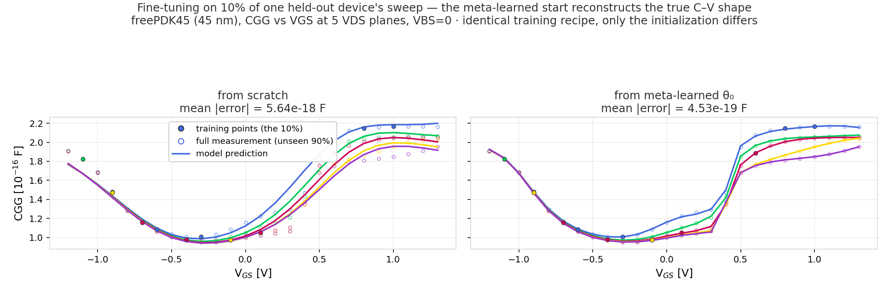
And with 10% of the data. Fine-tuning on every tenth point of a held-out
45 nm device: from scratch, the model invents a plausible but wrong C–V shape (12× higher error on
the unseen 90%); from the meta-learned start it reconstructs the true shape — including the sharp
transition the sparse points barely sample.
What made it hard. The honest evaluation. Early wins evaporated under stricter protocols
(full-data criterion, process-level hold-out, seed-noise controls), so the final claims come from
a leave-one-process-out setup with fixed splits — and the one node that stays at parity is
reported, not hidden.
Function-Space Anomaly Detection
FuncAnoDe · SISPAD 2024 (first author) · reused in production and an industrial collaboration
The problem. One bad curve silently poisons a trained model.
Simulation pipelines occasionally produce curves that are numerically fine but
physically wrong — a non-monotonic output curve, a kink no real device would show.
My approach. Treat each curve as a function and score it in function space.
Unsupervised — a neural operator learns to reconstruct curves from technologies we trust;
a new curve's reconstruction error becomes its anomaly score. No labels needed.
The accept/reject threshold is set automatically by kernel density estimation —
no engineer hand-tuning a cutoff.
Trained on mature technology nodes, tested on a more advanced node:
100% accuracy, recall, and precision, where fPCA, K-means, and spectral clustering
baselines topped out around 82% (published benchmark).
Published at SISPAD 2024 (first author), then quietly became infrastructure — it screens
training data in the production pipeline and held up in a collaboration with a
global equipment maker. The same idea became a PCT patent filing (first inventor).
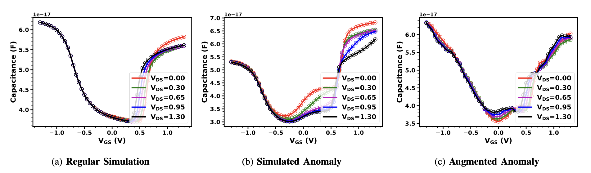
From the SISPAD 2024 paper — what the screen has to catch: (a) a regular simulated
C–V family, (b) a simulated anomaly, (c) an augmented anomaly. Numerically fine, physically wrong.
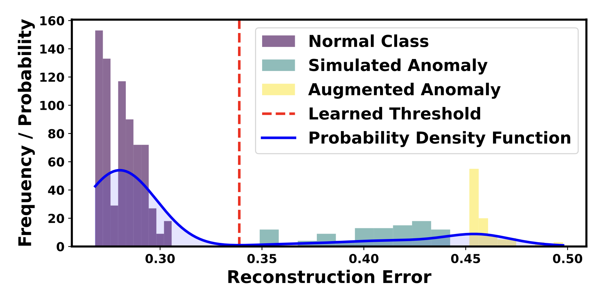
Paper figure — reconstruction-error distribution with the KDE-learned
threshold (dashed): normal curves cluster left, anomalies land right. No hand-tuned cutoff.
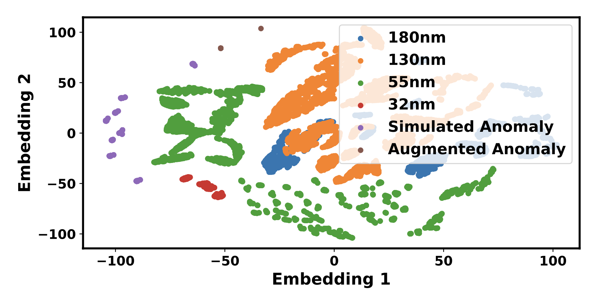
Paper figure — curve embeddings across four technology nodes (180/130/55/32 nm);
anomalies separate cleanly in the learned latent space.
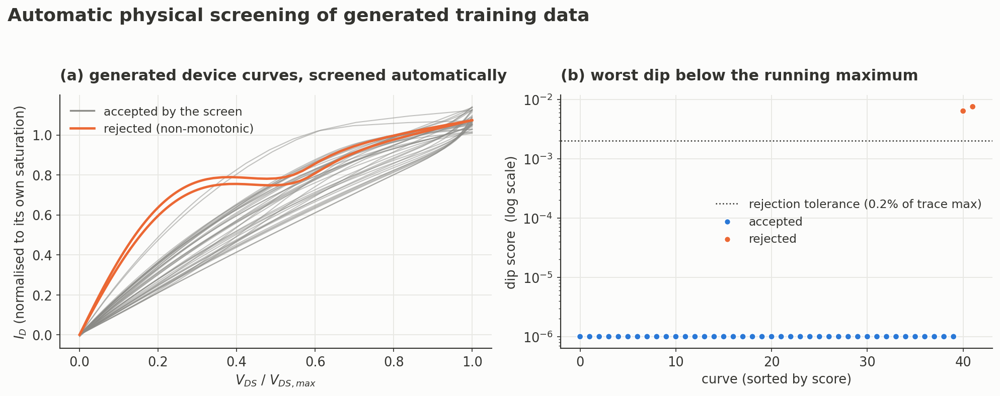
Actual screen output — 40+ generated device curves; two non-monotonic curves
are caught by the dip score (right, log scale) while every physical curve sits at the floor.
Synthetic data (reproducible from public compact models).
Publications
ICMC 2025 · FuncFlow: Generative Neural Operator for Simulation Augmentation — co-author (2nd) Diffusion-based generation of device curves, function by function, to fill out sparse simulation datasets.
SISPAD 2024 · Function-level Anomaly Detection for Semiconductors — first author The FuncAnoDe work above — unsupervised screening of physically wrong device curves, demonstrated on C–V characteristics in the paper.
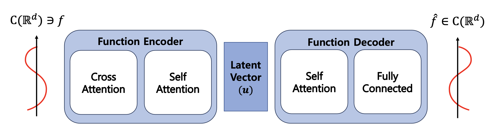
Left: the function encoder–decoder (paper Fig.) — curves in, reconstruction out; the error
is the anomaly score. Right: what it catches — regular vs simulated vs augmented anomalous C–V families.
AAAI 2024 · Inducing Point Operator Transformer (IPOT) for Solving PDEs — co-author (2nd), implementation lead · code Cross-attention onto a fixed set of induced points makes the operator mesh-independent — any grid in,
any grid out, with linear cost. Best-or-comparable accuracy on PDE benchmarks and ERA5 weather with the fewest parameters.
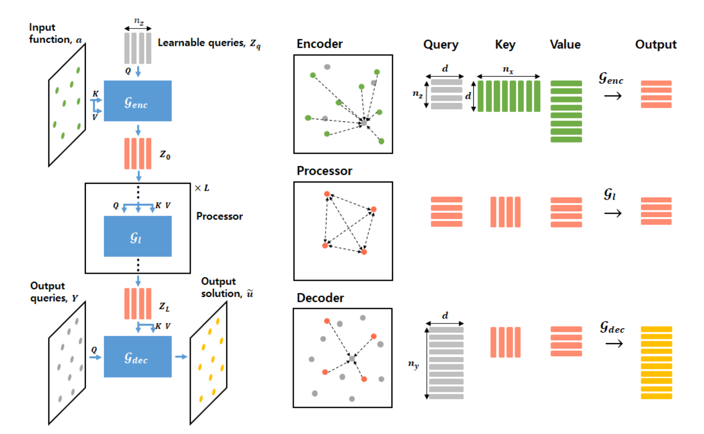
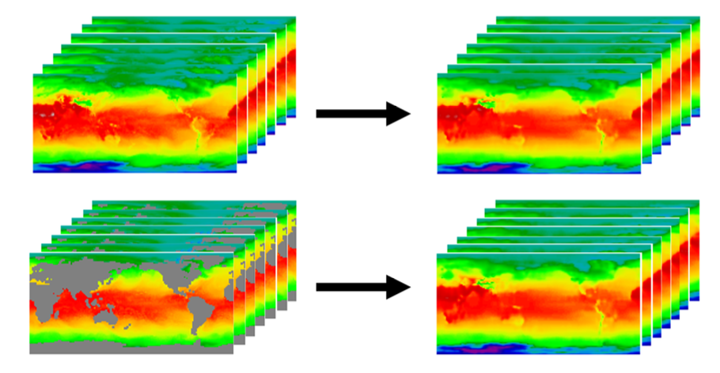
Left: encoder–processor–decoder with learnable induced queries. Right: ERA5 temperature —
the model predicts the full field even when land regions are masked from the input.
Patents
Granted · Neural-network training for device characteristic prediction (소자 특성 예측 신경망 학습) — KR 10-2992226 (co-inventor)
PCT Int'l · AI-based anomaly detection for device simulation (AI 기반 소자 시뮬레이션 이상 탐지) — PCT/KR2025/009034 (first inventor)
Filed · Neural-network generation of device characteristic data (신경망 기반 소자 특성 데이터 생성) — KR 10-2025-0142499 (first inventor)